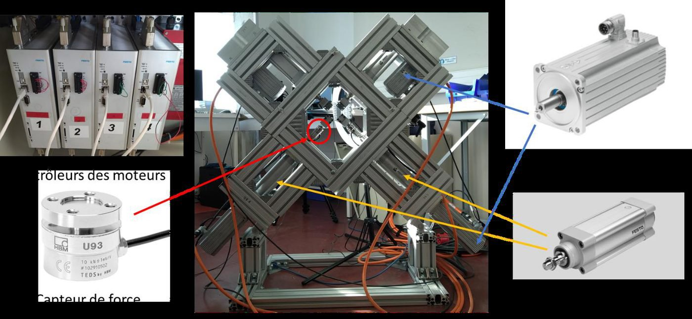
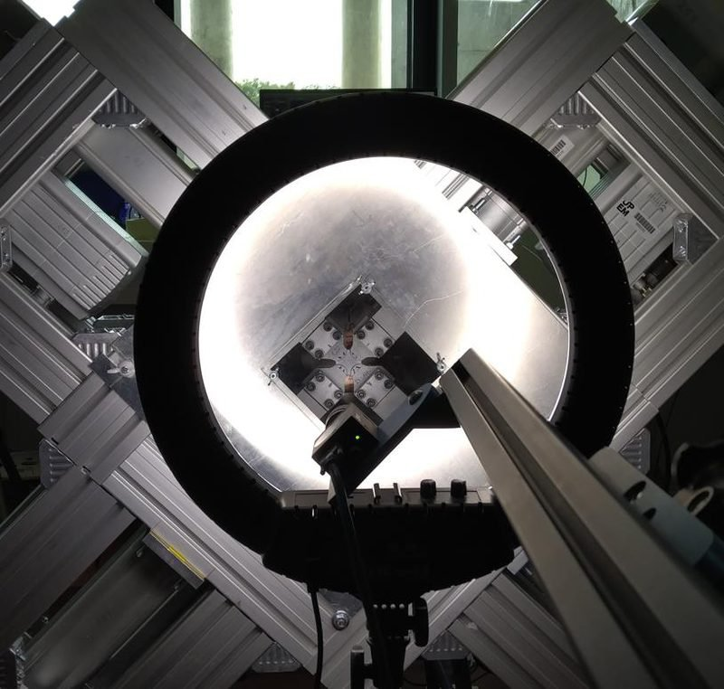
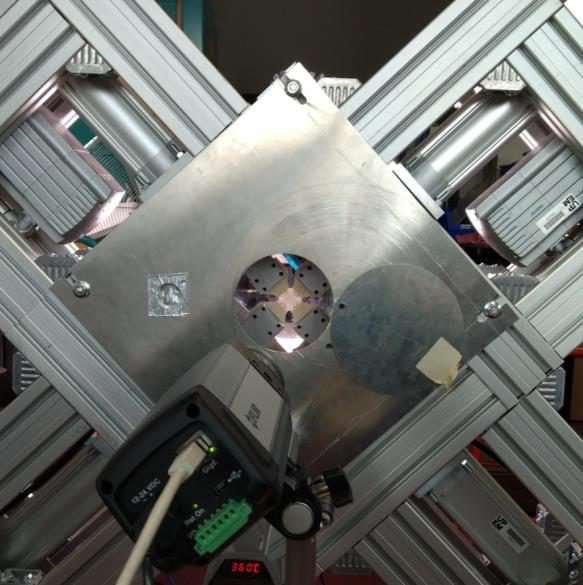
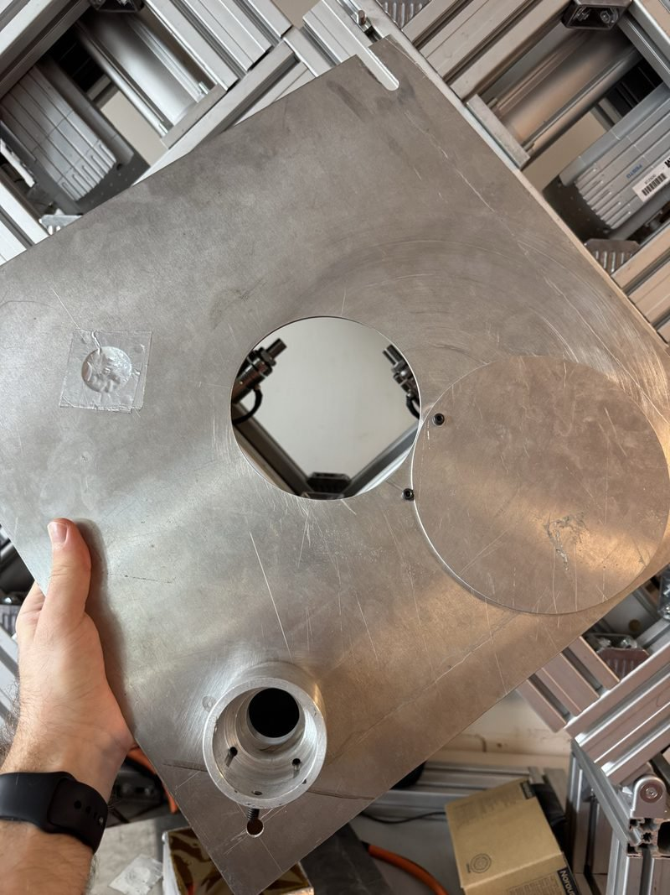
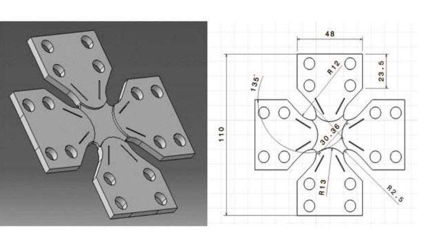

Test bench · MSME laboratory (UMR 8208 CNRS), Université Gustave Eiffel · 2026
4-Axis Biaxial Tensile Rig
Motion controlModbus TCPNI DAQCamera syncTestStand / LabVIEW / Python

Summary
The rig stretches a specimen in two perpendicular directions at once. Four motorised arms, set in a cross around the specimen, each have their own servo-drive: they can move together (equibiaxial stretch), axis by axis or with different strokes. It was built to study PET in conditions close to stretch-blow moulding of bottles — heated slightly above the glass transition (about 100 °C), stretched by 400–500 % at high speed — and has even travelled to the SOLEIL synchrotron for in-situ X-ray scattering.
In 2026 I rewrote its control software (banc_auto): the four Festo drives are driven over Modbus TCP, forces are acquired with an NI chassis, and the DIC camera is now synchronised in hardware by a counter of the NI chassis. I also wrote the 37-page lab notebook (version 1.4) and a delivery package so a new user can run a test alone.
On the bench
Commissioning work in the strict sense: checking each drive and line of motion, the sign convention of the load cells (compression negative, measured on 15 October 2026), their zero offset (~250 N, removed by a one-second tare) and noise (±5 N), and correcting the 20 ms delay of the NI 9237 digital filter so forces and images line up exactly. A safe fallback mode stops the arms if anything goes wrong.
Method & equations
Kinematics — from arm positions to strain (stretch \(\lambda\), nominal and true strain):
$$\lambda=\frac{L_0+\Delta L}{L_0},\qquad \varepsilon_{\text{nom}}=\lambda-1,\qquad \varepsilon_{\text{true}}=\ln\lambda$$Stresses — nominal and true stress for an incompressible material (\(e_0\), \(w_0\): initial thickness and loaded width); for the cruciform specimen, equilibrium of a half specimen cut along its diagonal \(L_0\):
$$\sigma_{\text{nom}}=\frac{F}{e_0w_0},\qquad \sigma_{x,\text{true}}=\frac{F_x\,\lambda_x}{e_0w_0},\qquad \sigma_{nn}=\frac{\lambda\sqrt2\,F}{e_0L_0}\ \ (\text{equibiaxial})$$Forces — HBM U93 load cells (full Wheatstone bridges, 10 kN for 1 mV/V) read by an NI 9237 at 2000 Hz. Camera — image \(k\) is triggered by the NI counter on PFI 0 at a fixed rate on the force clock:
$$F=-10\,000\ \frac{U}{1\ \mathrm{mV/V}}\ \mathrm{N},\qquad t_k=t_0+\frac{k}{f_{\text{cam}}},\quad t_0=1\ \mathrm{s},\ f_{\text{cam}}=100\ \mathrm{fps},\qquad \tau_{\text{filter}}=\frac{40+5/512}{f_s}+4.5\ \mu\mathrm{s}\approx20\ \mathrm{ms}$$Figures








